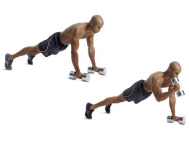
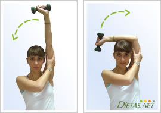

Ejercicios efectivos de tríceps
Homepage
Products
Services
Clients
Support
Welcome to Ejercicios efectivos de tríceps
2021.06.26 19:32

<div class="mc_vtvc_th b_canvas"><div class="cico" style="width:234px;height:131px;"><div class="rms_iac" style="height:131px;line-height:131px;width:234px;" data-height="131" data-width="234" data-alt="Los mejores EJERCICIOS PARA volumen en triceps y marcados" data-role="presentation" data-class="rms_img" data-src="https://tse3.mm.bing.net/th?id=OVP.zPOaitYKbB0TQGed0S_uEwEsDh" frameborder="0" allow="accelerometer; autoplay; encrypted-media; gyroscope; picture-in-picture" allowfullscreen>

Menu
Los 6 mejores ejercicios para tonificar los brazos | Vidae
Los 6 mejores ejercicios para desarrollar brazo: bíceps y tríceps
▷ Mejores ejercicios para tríceps estimulando sus 3 cabezas
Ejercicios de tríceps para tonificar y combatir la flacidez de los .
Ejercicios fáciles y entretenidos para entrenar el tríceps en casa
3 ejercicios para unos tríceps marcados y fuertes - Red Bull
Tríceps: ejercicios de brazos para eliminar las "alas de .
15 ejercicios para unos tríceps y brazos más grandes
Los mejores ejercicios de tríceps que puedes realizar en el .
Ejercicios con mancuernas para fortalecer tus tríceps y bíceps .
Los 6 mejores ejercicios para tonificar los brazos | Vidae
Los 6 mejores ejercicios para desarrollar brazo: bíceps y tríceps
▷ Mejores ejercicios para tríceps estimulando sus 3 cabezas
Ejercicios de tríceps para tonificar y combatir la flacidez de los .
Ejercicios fáciles y entretenidos para entrenar el tríceps en casa
3 ejercicios para unos tríceps marcados y fuertes - Red Bull
Tríceps: ejercicios de brazos para eliminar las "alas de .
15 ejercicios para unos tríceps y brazos más grandes
Los mejores ejercicios de tríceps que puedes realizar en el .
Ejercicios con mancuernas para fortalecer tus tríceps y bíceps .